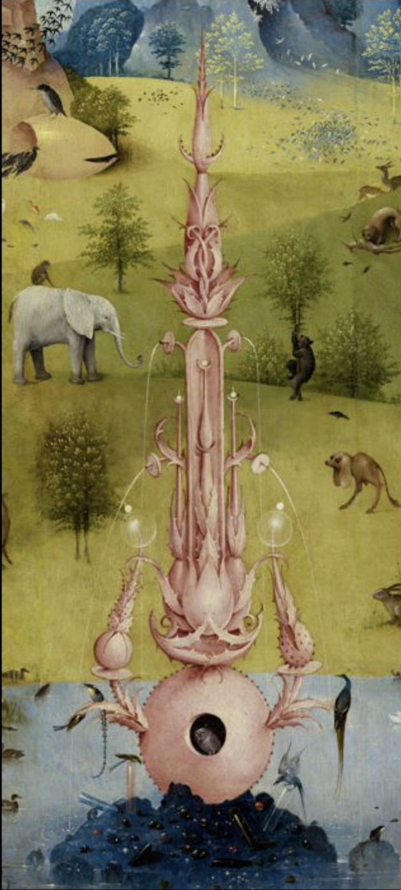
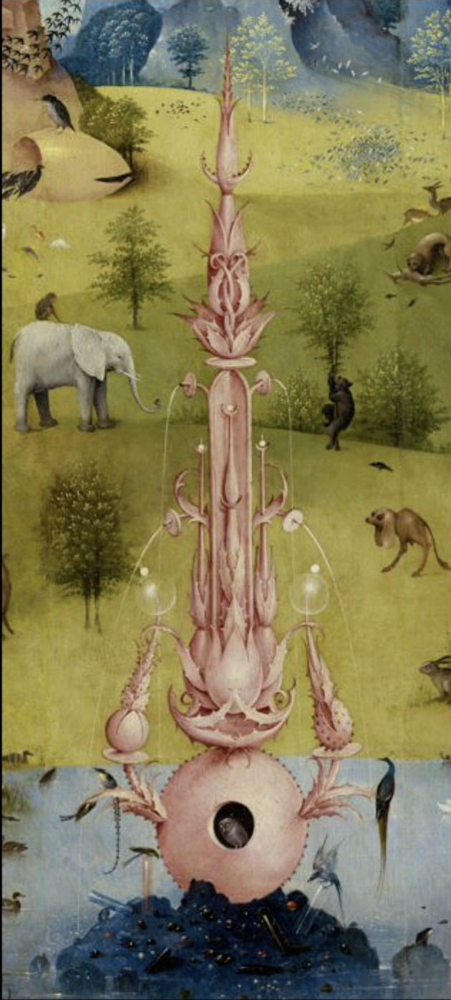
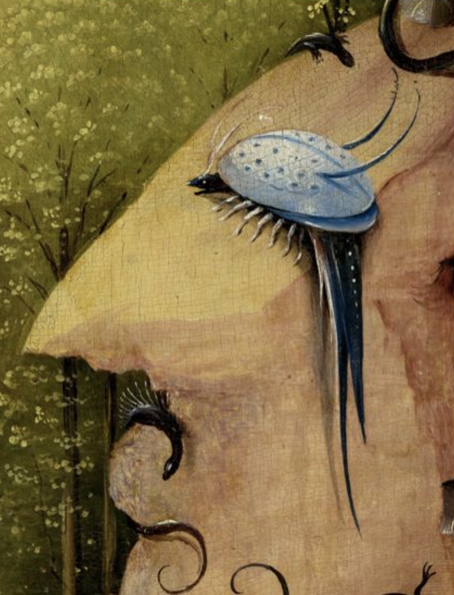
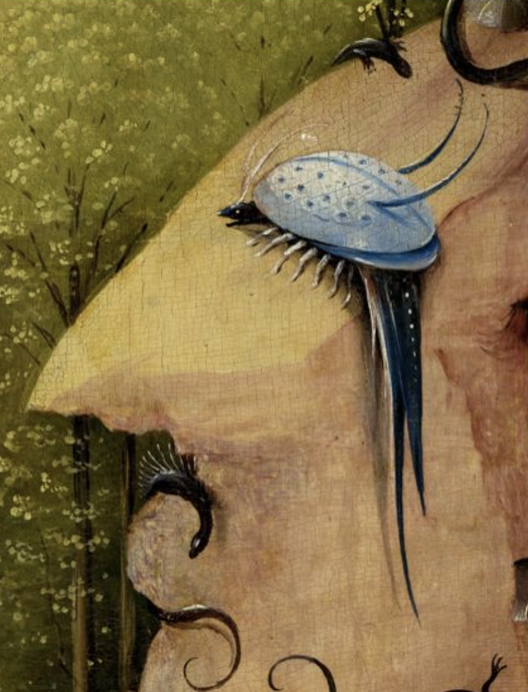

Water carries and conveys influences, it represents ideas and the flow of conciousness
 

 
vermin creep out of the water, crawling to the cave representing one's mind. Style of the mountain face inspired surrealists

vermin creep out of the water, crawling to the cave representing one's mind. Style of the mountain face inspired surrealists